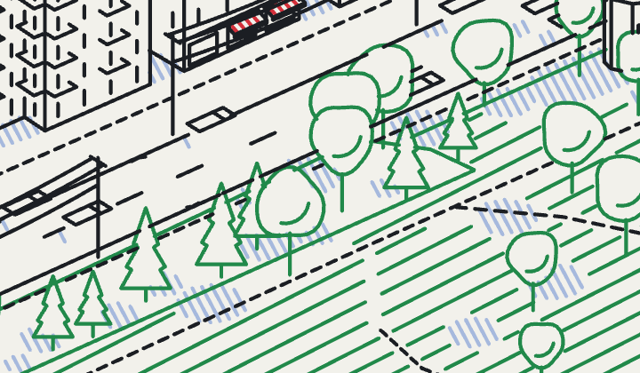

15 November 2026 · Original review · Round 8
Paths now have a continuous quiet corridor through park hatching. The green strokes stop two pen widths from the path centre, leaving room for the black dashes to read as a route. Rounded joints keep the break continuous around bends and through dash gaps. Tracks and steps receive additional room for their ruts and treads.
The mask follows the paths layer’s Detail and length threshold. Platforms and hidden path settings create no corridor. This round changes only park tone; meadow tufts, field textures, shadows and tree placement remain separate areas for refinement.

Three places at two scales, Detail 1, 0.35 mm pen, optional OSM tags off. Estimated plotting time changes by less than 0.3% in every case. Splitting long hatch lines adds pen lifts in some views, even while reducing ink; the purpose here is clearer separation.
| Sheet | Waste before → after | Estimated time change |
|---|---|---|
| Mollis 1:1000 | 6.8% → 6.8% | +0.03% |
| Mollis 1:4000 | 13.1% → 13.1% | -0.03% |
| Sapporo 1:1000 | 5.8% → 5.7% | +0.18% |
| Sapporo 1:4000 | 11.8% → 11.8% | -0.30% |
| Rye 1:1000 | 6.6% → 6.6% | -0.00% |
| Rye 1:4000 | 13.4% → 13.4% | -0.09% |
Before lab report · After lab report (local generated files)
Reviewed ten changed golden sheets, six LOD sheets and their centre close-ups, plus the enlarged before/after park comparison above. Golden changes are confined to park grass and resulting plot/SVG summaries; counts, census and all other feature totals are unchanged. Regression tests cover regular and broad pens, continuous hatch clearance, disabled paths, platforms and short paths below the detail threshold.
Build and all 567 tests pass. No physical print proofs were inspected. Full-sheet reviews cannot resolve every individual stroke; not every bend, track, staircase, seed, bearing or all 29 presets were checked by eye. Shadow crossings and paths through other ground textures remain for a later pass.